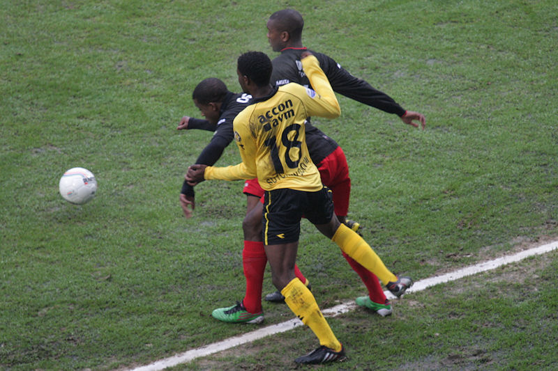

De winterstop is voorbij. De tweede
competitiehelft start met een thuiswedstrijd tegen Excelsior.
In samenwerking met Brand Bier gaat er een groot spandoek over West.
Tyton gaat zoals gebruikelijk voor de aftrap in de Here.

Door de vele regenval is het veld moeilijk bespeelbaar.
Doelman Paauwe is kansloos op een schot van Hempte dat door Janssen
van richting wordt veranderd: 1-0, (14').
Kah kopt in uit een hoekschop: 2-0, (28').
Hij draagt het doelpunt op aan "goede gozer" Vincent Lachambre.
Even later in duel met Fernandez.
Scheidsrechter Winter trekt de tweede gele kaart voor Ramsteijn.
Vanaf dat moment krijgt Roda nog meer dan voorheen uitgelezen kansen
om de score flink op te voeren.
Pluim maakt zijn debuut in een eredivisie-duel bij Roda.
Een prima pass van Pluim bereikt Janssen die aflegt op Skoubo. Na
een eerdere misser van formaat schuift de aanvaller de bal nu wèl in
het doel: 3-0, (84').
Door deze overwinning stijgt Roda een plaats in de ranglijst en
staat nu vijfde.
Kah (met champagne) als notoire ceremoniemeester bij al uw feesten.
De Kickoff werd bezocht door Vormer, Prusz en Matondo.